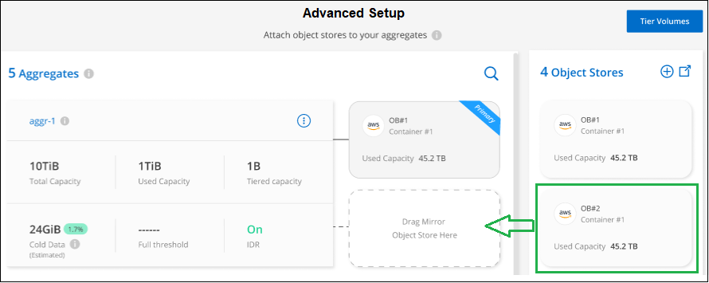
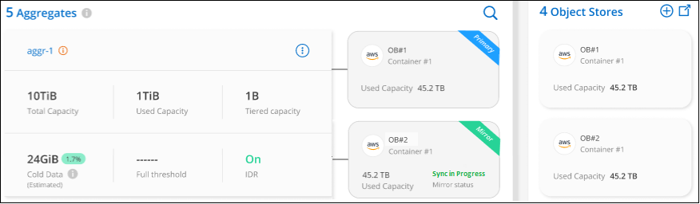
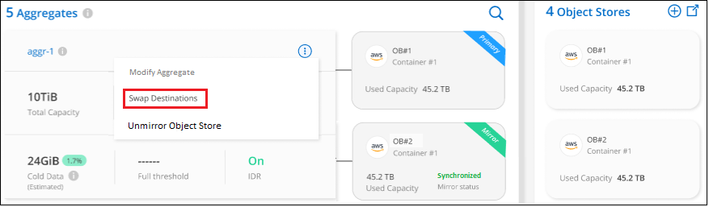
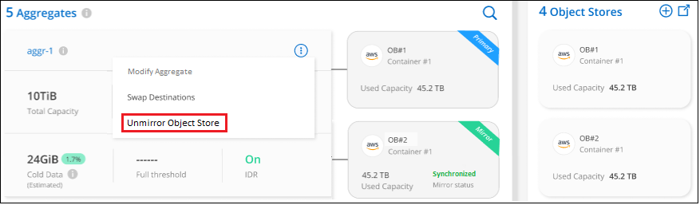

入门
入门
管理用于数据分层的对象存储
 建议更改
建议更改
将内部ONTAP 集群配置为将数据分层到特定对象存储之后、您可以执行其他对象存储任务。您可以添加新的对象存储、将分层数据镜像到二级对象存储、交换主对象存储和镜像对象存储、从聚合中删除镜像对象存储等。
查看为集群配置的对象存储
您可能希望查看为集群配置的所有对象存储以及它们所连接的聚合。XP Bluetiering可为每个集群提供此信息。
-
从*集群*页面中、单击集群的菜单图标、然后选择*对象存储信息*。
-
查看有关对象存储的详细信息。
此示例显示了连接到集群上不同聚合的Amazon S3和Azure Blob对象存储。

添加新对象存储
您可以添加可用于集群中聚合的新对象存储。创建后、您可以将其附加到聚合。
-
从*集群*页面中、单击集群的菜单图标、然后选择*对象存储信息*。
-
在对象存储信息页面中、单击*创建新对象存储*。

此时将启动对象存储向导。以下示例显示了如何在Amazon S3中创建对象存储。
-
定义对象存储名称：输入此对象存储的名称。它必须与此集群上的聚合可能使用的任何其他对象存储唯一。
-
选择提供程序：选择提供程序、例如* Amazon Web Services*、然后单击*继续*。
-
完成*创建对象存储*页面上的步骤：
-
* S3 Bucket*：添加新的S3存储分段或选择以_fabric-pool_前缀开头的现有S3存储分段。然后、输入用于访问存储分段的AWS帐户ID、选择存储分段区域、然后单击*继续*。
需要使用 fabric-pool 前缀，因为 Connector 的 IAM 策略允许实例对使用该前缀命名的分段执行 S3 操作。例如，您可以将 S3 存储分段命名为 fabric-pool-AFF1 ，其中 AFF1 是集群的名称。
-
存储类生命周期：BlueXP分层管理分层数据的生命周期过渡。数据从_Standard"类开始、但您可以创建一个规则、以便在特定天数后将其他存储类应用于数据。
选择要将分层数据过渡到的S3存储类以及将数据分配给该类之前的天数，然后单击*继续*。例如、下面的屏幕截图显示、在对象存储中运行45天后、分层数据会从_Standard"类分配给_Standard" iA_类。
如果选择 * 将数据保留在此存储类中 * ，则数据将保留在 Standard 存储类中，不会应用任何规则。 "请参见支持的存储类"。

请注意、此生命周期规则将应用于选定存储分段中的所有对象。
-
* 凭据 * ：输入具有所需 S3 权限的 IAM 用户的访问密钥 ID 和机密密钥，然后单击 * 继续 * 。
IAM 用户必须与您在 * S3 Bucket* 页面上选择或创建的存储分段位于同一 AWS 帐户中。请参见有关激活分层的章节中的所需权限。
-
* 集群网络 * ：选择 ONTAP 应用于连接到对象存储的 IP 空间，然后单击 * 继续 * 。
选择正确的IP空间可确保BlueXP分层可以设置从ONTAP 到云提供商对象存储的连接。
-
此时将创建对象存储。
现在、您可以将对象存储附加到集群中的聚合。
将另一个对象存储附加到聚合以进行镜像
您可以将另一个对象存储附加到聚合、以创建FabricPool 镜像、从而将数据同步分层到两个对象存储。您必须已将一个对象存储附加到聚合。 "了解有关FabricPool 镜像的更多信息"。
使用MetroCluster 配置时、最佳做法是在公有 云中使用位于不同可用性区域的对象存储。 "在ONTAP 文档中了解有关MetroCluster 要求的更多信息"。
请注意、在MetroCluster 配置中使用StorageGRID 作为对象存储时、两个ONTAP 系统都可以对一个StorageGRID 系统执行FabricPool 分层。每个ONTAP 系统都必须将数据分层到不同的存储分段。
-
在*集群*页面中、单击选定集群的*高级设置*。

-
从高级设置页面中、将要使用的对象存储拖动到镜像对象存储的位置。

-
在附加对象存储对话框中、单击*附加*、第二个对象存储将附加到聚合。

当2个对象存储正在同步时、镜像状态将显示为"正在同步"。同步完成后、状态将更改为"已同步"。
交换主对象存储和镜像对象存储
您可以交换聚合的主对象存储和镜像对象存储。对象存储镜像将成为主镜像、而原始主镜像将成为镜像。
-
在*集群*页面中、单击选定集群的*高级设置*。
-
在高级设置页面中、单击聚合的菜单图标、然后选择*交换目标*。

-
批准对话框中的操作、并交换主对象存储和镜像对象存储。
从聚合中删除镜像对象存储
如果您不再需要复制到其他对象存储、则可以删除FabricPool 镜像。
-
在*集群*页面中、单击选定集群的*高级设置*。
-
在高级设置页面中、单击聚合的菜单图标、然后选择*取消镜像对象存储*。

此时将从聚合中删除镜像对象存储、并且不再复制分层数据。

|
从MetroCluster 配置中删除镜像对象存储时、系统将提示您是否也要删除主对象存储。您可以选择保持主对象存储附加到聚合、也可以选择将其删除。 |
将分层数据迁移到其他云提供商
借助BlueXP分层功能、您可以轻松地将分层数据迁移到其他云提供商。例如、如果要从Amazon S3迁移到Azure Blob、可以按以下顺序执行上述步骤：
-
添加Azure Blob对象存储。
-
将此新对象存储作为镜像附加到现有聚合。
-
交换主对象存储和镜像对象存储。
-
取消镜像Amazon S3对象存储。